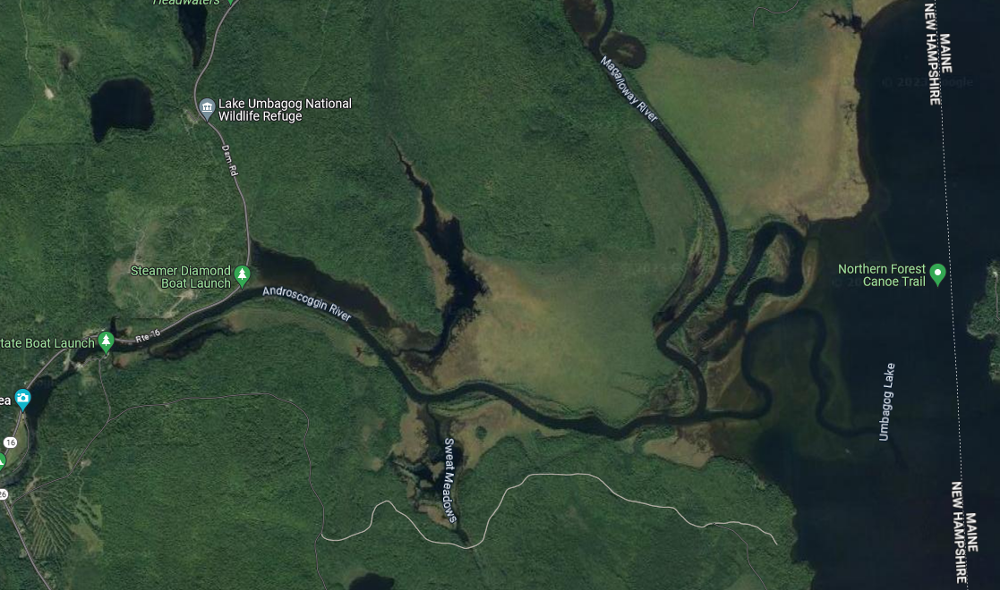

Sunday, July 28th, 2024

 Weather Channel
Weather Channel - Accuweather
- Weather Underground
Errol Weather Links
History
- 10) 2023: Sun Jul 16 - Fri Jul 21 (5 nights)
- 9) 2022: Mon Jun 27 - Fri Jul 01 (4 nights)
- 8) 2021: Mon Jul 19 - Fri Jul 23 (4 nights)
- 7) 2020: Sun Jul 12 - Thu Jul 16 (4 nights)
- 6) 2019: Mon Jul 22 - Fri Jul 26 (4 nights)
- 5) 2018: Sun Jul 15 - Thu Jul 19 (4 nights)
- 4) 2017: Mon Jul 17 - Fri Jul 21 (4 nights)
- 3) 2016: Sun Aug 14 - Thu Aug 18 (4 nights)
- 2) 2015: Mon Jul 27 - Thu Jul 30 (3 nights)
- 1) 2014: Canoe Trip - Wed Jul 30 - Thu Jul 31 (1 night)